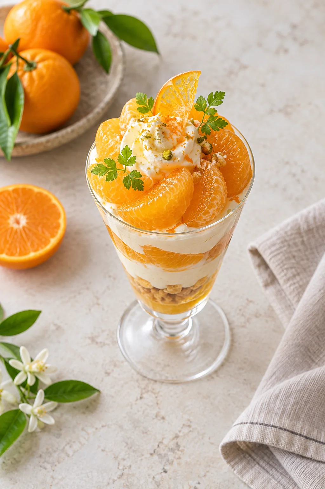

この土地の、
おいしい理由。
旬の果実と、その向こうの風景を。
02 / ORIGIN
FROM FARM TO CAFÉ果実を知るほど、
果実を知るほど、
味わいが深くなる。
和歌山の果実をテーマに、季節ごとに変わるメニューと生産地の物語をつなぎます。産地・生産者・栽培方法に関する具体的な説明は未支給のため、実在の農園や品質を示す記述は載せていません。
A YEAR OF FRUIT
季節をめくる。
以下は構成見本。実際の仕入れと提供時期を確認して掲載します。
SPRING春の果実
やわらかな香りから始まる季節。
SUMMER夏の果実
涼やかな一杯が似合う季節。
AUTUMN秋の果実
実りをゆっくり味わう季節。
WINTER冬の果実
陽だまりのような甘さの季節。
